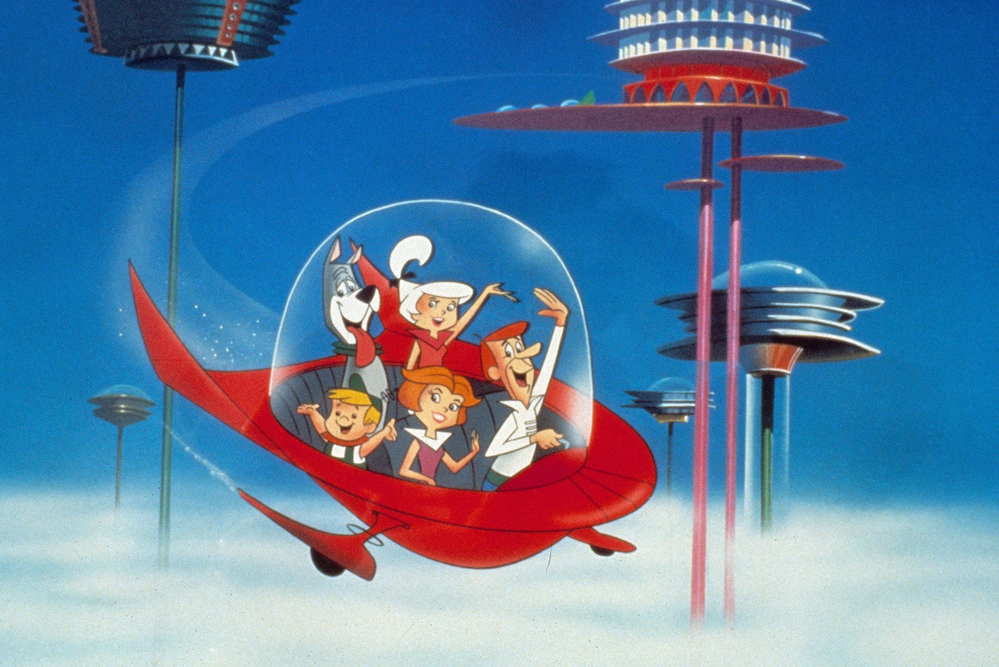
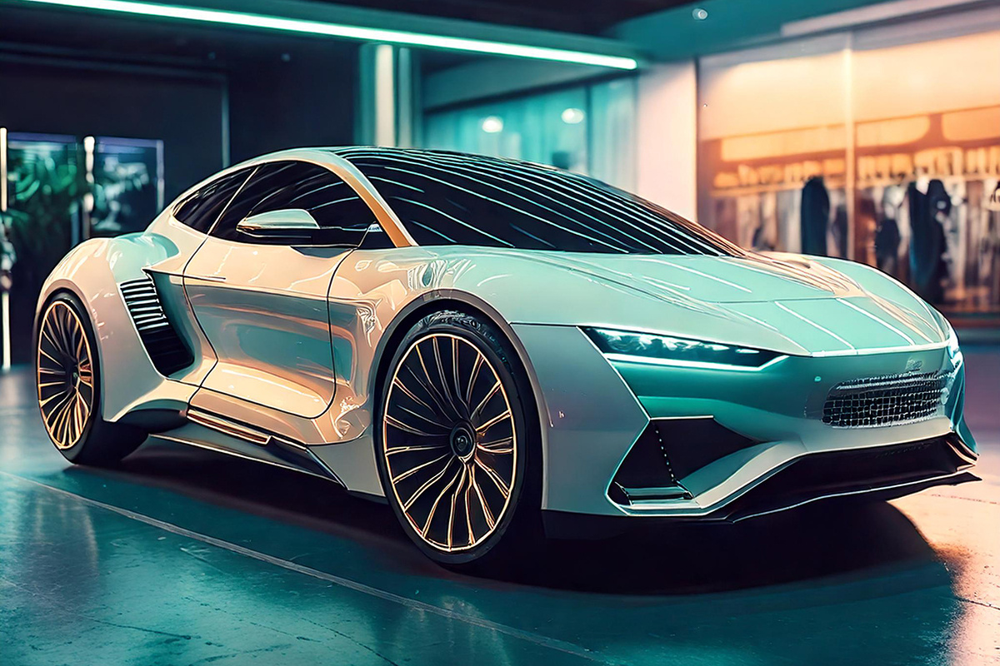

¿Alguien dijo Supersónicos?
Sí, nosotros. Amamos las analogías y estos dibujitos animados
Sí, nosotros. Amamos las analogías y estos dibujitos animados

El crecimiento de los autos eléctricos está siendo cada vez mayor, ya no nos sorprende ver estaciones de carga para estos, ni que algún amigo llegue a la junta con uno. Pero como todo gran cambio trae repercusiones en otras áreas. Es por eso que invitamos a Nico Talavera nuestro Country Manager, para hablar sobre estos temas.
Cuando en 1962 se estrenó por primera vez “Los Supersónicos” (gran y famosa serie animada acerca del futuro), muchos se preguntaron si es que alguna vez esto sería una realidad y más aún, si sería dentro de los 100 años próximos como argumentaba la serie; donde veíamos una sociedad con robots, videollamadas y por sobre todo, autos voladores. Aún no tenemos la bolita de cristal, pero sí podemos decir que faltan 40 años para la fecha en que transcurría la serie y quién sabe qué puede pasar en estos tiempos donde la innovación avanza cada vez más rápido.
Digamos una cosa y es que fueron visionarios en las videollamadas. Punto a favor y esperemos esos 40 años para saber si la profecía animada se cumple.
Aterrizamos en Chile 2024
“Lo que sí sabemos, es que en Chile el mercado de autos eléctricos (no voladores, lamentablemente), ha ido al alza en los últimos años. No solo en unidades, sino también en tecnologías, accesibilidad, variedad y también precios.
En lo que va del 2024, ya se ha visto un alza de cerca de 160% de autos comercializados en el país versus el año pasado. Si el objetivo para 2030 es que existan alrededor de 80.000 autos eléctricos en circulación en Chile, que no nos sorprenda que este número siga creciendo a tasas aceleradas.”

“Todo esto supone grandes desafíos para toda la industria. Nuevos modelos, nuevas marcas, nuevas tecnologías, más estaciones de carga e infraestructura, competitividad en precios, cambios en regulaciones y legislaciones, y también, desafíos para el mercado asegurador.
Hace 2 años, en Compara Online contábamos con muy poquitas marcas aseguradoras para nuestros clientes. Hoy, la demanda es mayor y las compañías ven cada vez más de cerca la necesidad de asegurar este tipo de vehículos. Sumando a que hay más modelos andando y los precios son más accesibles, hoy tenemos una gama muy amplia de lo que podemos ofertar versus lo que teníamos en el pasado. Seguiremos en la lucha para que cada uno de los usuarios de autos eléctricos pueda tener acceso a un seguro y estar tranquilo. Con el mercado siempre evolucionando y teniendo siempre nuevas tecnologías y modelos, es nuestro deber porque así sea.”
Es increíble ver cómo ha mejorado la cobertura, los precios y la variedad de seguros para este tipo de mercados y que de seguro seguirá innovando, hasta por fin llegar a los autos voladores como en Los Supersónicos.
Spoiler alert, los autos van a volar y Alexa será nuestra Robotina. En realidad no lo sabemos, pero nos encanta imaginar que sí. Lo importante es que no importa si los autos vuelan, son eléctricos o a bencina, siempre van a contar con los mejores seguros para que, si les sucede algo, estén supercubiertos.
Gracias Nico por ser parte de El Comparador. Nos leemos próximamente de nuevo.